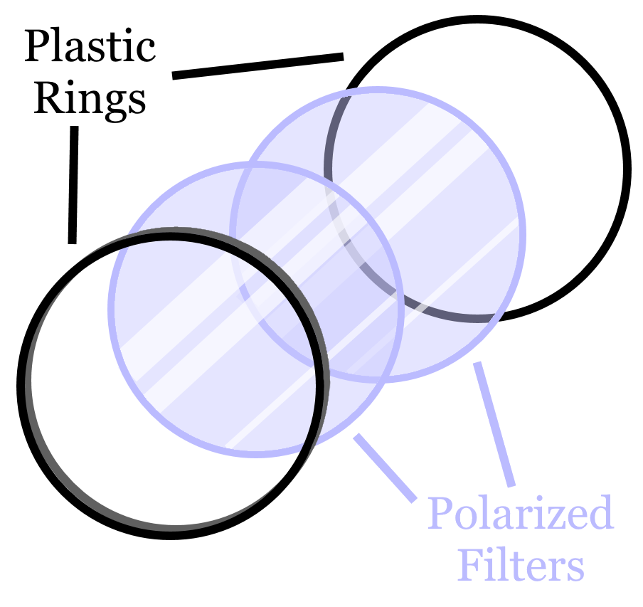
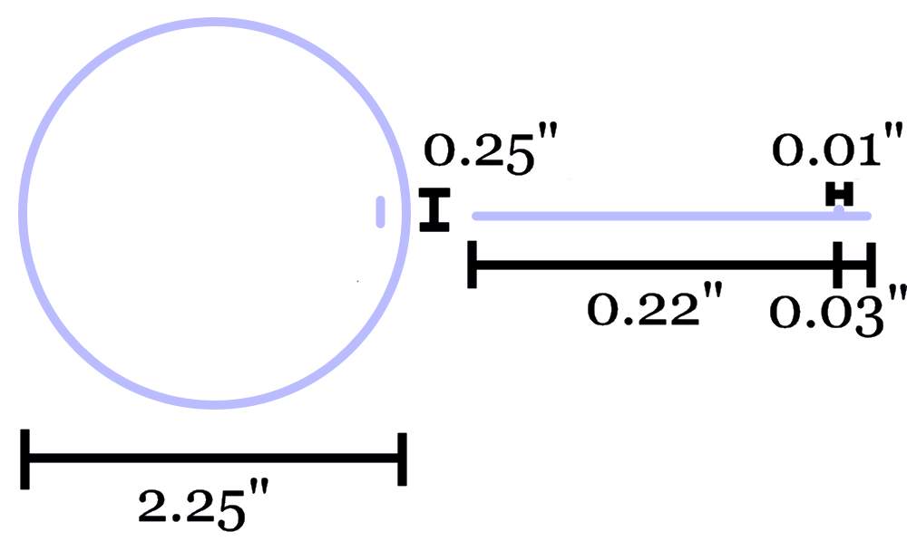

The Engineering of Omniphotics
Explore the engineering of Omniphotics
An Old Friend
Omniphotics features the design of common sunglasses. Simply put, there is no reason to reinvent the wheel. The magic in Omniphotics comes from the lenses, and there is no reason to modify the main structural design. Our team here at Omniphotics focused on designing what's important: the function. The sunglasses themselves are designed to be standard circular-lensed glasses.

A New Challenger
In addition to our classic glasses design, Omniphotics has innovated and improved when it comes to the lenses. Standard sunglass lenses have a tint that darkens them and makes it easier to see in bright overwhelming light. This, however, is a static and unadaptive system. A slight improvement would be transition lenses, which automatically darken in bright light. Omniphotics, however, utilize a dual-polarization feature to dynamically ajust brightness at the user's will.
The polarized filters slip into a thin plastic ring with rims to hold them in place. The polarized filters are held in place by the edges of the plastic rims, which wrap overtop of the edges of the polarized filters. One of the lenses is glued in place, and the other is free to rotate freely. To rotate the filter, the lense has a small extrusion near the rim like so:
The wearer will press their finger against the small extrusion and move their finger in a circle to rotate the lense. This will adjust the brightness to the user's preference.
Omniphotics Engineering
Copyright © 2020 by A Nonexistant Inc.
Prior Edition © 2020 by An Equally Nonexistent Inc.
All rights not reserved. Any part of this website may be reproduced
without permission from the publisher, especially considering he is 17.